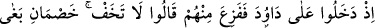
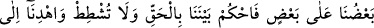
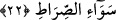
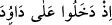
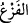
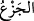
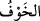
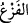
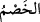
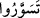
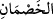
Tırmanan hasımlardan maksad, birer insan şeklindeki dâvâcı ve dâvâlı kılığındaki
Cebrâîl ve Mîkâîl ile beraberlerindeki şâhid ve tezkiyeci kılığına girmiş meleklerdir.
22. Dâvûd’un yanına girmişlerdi de Dâvud onlardan korkmuştu. “Korkma! Biz
birbirine hasım iki dâvâcıyız, aramızda adaletle hükmet, haksızlık etme; bize doğru
yolu göster” dediler.
(
) “Dâvûd’un yanına girmişlerdi de” Bu ifâde, bir önceki ifâdeden
bedeldir. “Dâvûd onlardan korkmuştu.” Buradaki (
), endişe verici bir şeyden
dolayı insanda ortaya çıkan bir daralma ve ürkme hâlidir. (
), telaşlanıp üzülmek
anlamına gelen (
) cinsindendir. Allah’tan korktum (
) denir; ama O’ndan ürktüm
(
) denmez. Dâvûd onlardan ürkmüştü; zira kapısı kapalı bir odada ibâdet ederken
kapıdan girecekleri yerde üstten ansızın alışılmadık bir şekilde inivermişlerdi.
Burada, insanoğlunun son derece zayıf bir tabiatı bulunduğuna işâret edilmektedir.
Dâvûd, bu kadar güçlü olmasına rağmen, bunlardan ürkebilmiş! Dâvûd’un bu tavrı,
ileride geleceği üzere, belki de bu olayın, kendisini önceden yaptığı bir şeyden dolayı
cezâlandırmak ve buna dikkatini çekmek maksadıyla ortaya çıktığını ruhuyla
anlamasından ileri gelmiştir.
Dâvâcılar, onun ürktüğünü görünce, bunu izâle etmek için bizden “Korkma!”
demişlerdi.
et-Te’vîlâtü’n-Necmiyye’de der ki: İşârî olarak demek isteniyor ki, bizim sûrete
dayalı hallerimizden korkma, çünkü biz sana, aramızda adâletle hükmedesin diye
geldik. Yalnız bizim, gerçek hallerimizden kork; çünkü bunlar, seninle hasmın Uriya
arasında cereyan etmiş olan durumları ortaya koyacaktır.
“Biz birbirine hasım iki dâvâcıyız,” Bu ifâde, -hasmın arkadaşına da mecâzen hasım
dendiği için- biz birbirleriyle çekişme hâlinde olan iki hasım grubuz, anlamındadır.
Öyle görülüyor ki (
) lafzı, yukarıda geçen (
) fiilinden de anlaşıldığı üzere
çoğul anlamında kullanılmıştır. Sonra, -esasında ‘bu kardeşim’ kelimesinin delâletiyle,
iki grup değil de iki şahıs olmalarına rağmen,- grup diye tevil edilerek (
)
şeklinde tesniye kılındı. Fakat hasmın arkadaşına da hasım denmek sûretiyle,
beraberlerindekilerle birlikte iki dâvâcı grupmuş gibi zikredildiler. Böylece (
)
kelimesindeki tesniye sîgası ile bizim biraz önceki çoğul anlamının kasdedildiği